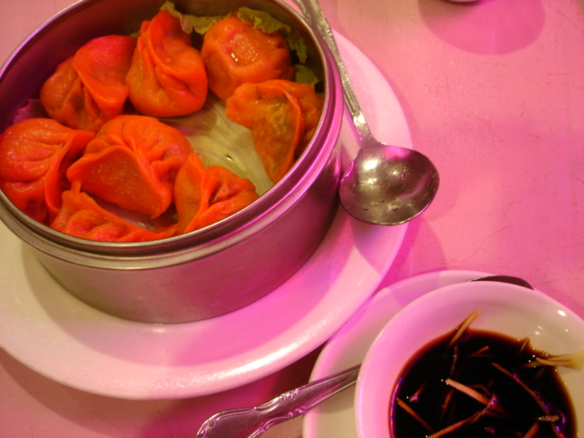
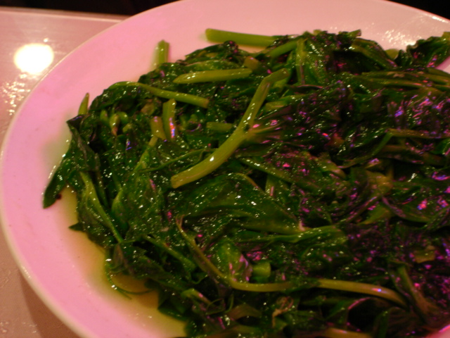
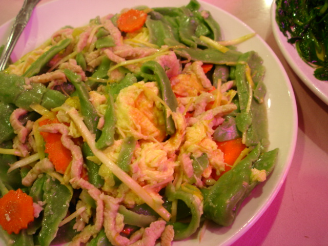
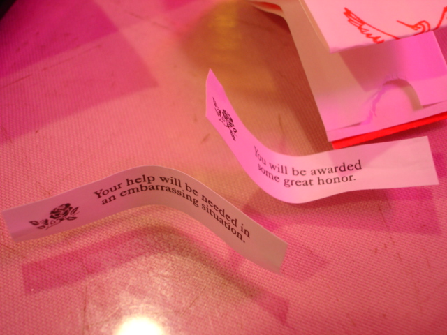

(Re)learning Chinese
I’ve never been a fan of Chinese food, or at least not the stuff that generally goes by that name in the U.S. When I was little, my family often went to our nearby Hunan Chinese Restaurant, but I remember it less for the food than for the décor: the goldfish in the fountain at the center of the room; the tinkly click-click of the beaded curtains in the hallway to the bathroom; and Shawn, the maître d’ with tight, shiny skin and starchy chinos with cavernous front pleats. As for the food, I’ll admit to a pre-teen’s weakness for crispy egg rolls, sweet-and-sour chicken, and beef with snow peas, but I drew the line there. What I knew as Chinese food always seemed to taste the same—lightly salty, greasy, and slimy with cornstarch.
But in recent years, I’ve found myself enjoying many things I’d previously relegated to the “no, thank you” category, and I realized that I had to give Chinese food another shot. After all, my condescension was based almost solely on those childhood experiences in Oklahoma, a state much better known for chicken-fried steak than for Peking duck. For the sake of fairness, I had to give it another go.
Still, it wasn’t a priority. In fact, I managed to live in Seattle for two years without ever venturing into the International District, although I often thought longingly of things I’d likely find there: bahn mi, rice noodles, knobby vegetables, musty-smelling teas. Note, however, that Chinese food didn’t make the list.
But all that changed last Sunday, when Kate and I strolled from her apartment down to the “I.D.” (as it’s called around here) on a scouting mission for a cocktail party we’re scheming. Dear reader, we both know that I’m prone to exaggeration, but believe me when I say this: I was in heaven. We gazed through windows at menus; we stroked bagfuls of wiry greens; and I dragged Kate into all the Chinese bakeries, where I ogled the soft, round buns and brioche-like breads filled with coconut or taro. I could have stared into the bakery cases for hours, singing along dreamily with the easy-listening music (ahh, the sound of my childhood!) that seemed to follow us from storefront to storefront. Even Kate, half-Chinese and something of a regular in the neighborhood, was entranced by the brightly colored, eerily perfect cakes, although she was less impressed with my lip-synching.
Somewhere along the way, after the fortune-cookie factory and before the Chinese grocery, we passed a restaurant called Shanghai Garden. Grabbing my arm as though a bolt of lightning had surged through her body, Kate panted something about vines. From what I could understand, Shanghai Garden is apparently known for its stir-fried pea vines, a dish that Kate likens to catnip for humans. Recalling an exchange I’d read on eGullet, I asked if they served hand-shaved noodles. Kate nodded. It was a date.
So last night we two descended on a very full Shanghai Garden, its glass tabletops gleaming and requisite fish tank glowing. We were seated by the window, at a table bathed in surprisingly flattering neon pink light. Warming our hands against white ceramic teacups, we sized up the extensive menu. The pea vines were a must, and after some discussion and more panting, we settled on barley-green hand-shaved noodle chow mein with pork, as well as an order of vegetable steamed dumplings to start.
The dumplings arrived quickly, little doughy purses gathered into the shape of waves.

Their deep orange skin was a bit unsettling, but we didn’t ask questions. Pinching them with our chopsticks, we dipped them into a sauce of soy and sesame oil with shavings of ginger and, slurping up errant drips, bit into them gently to reveal their verdant spinach filling.
Then came the pea vines, hot and sleek with oil from the wok. They were sweet, barely wilted, and astoundingly green-tasting, as though they’d just been picked.

The hand-shaved noodles were less photogenic, thick green ribbons stir-fried with egg, Napa cabbage, ruffly carrot coins, and thin strips of pork and piled onto the plate like debris from an explosion.

But they made up in texture (soft, almost melting under the tooth, yet not at all gummy or slippery) and flavor (mild, earthy, comforting) what they lacked in visual sophistication. We had two servings of everything and picked our plates clean, working our chopsticks like long, graceful fingers. We also carried on as usual, howling and slapping the table, making faces and talking microfinance and modern capitalism, but that’s old news by now.
Our fortunes were a bit vague and vanilla,

but between the table’s rosy pink glow and our full bellies, we were too happy to care. And anyway, now that I’ve learned my lesson, there’s always next time.